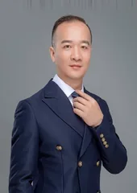
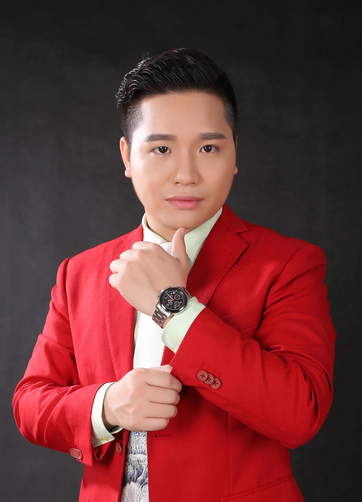

联合出版人
适合谁来自产业一线，希望与这本书同行的实践者。
参与方向提供并核对个人资料，结合自身经验参与交流与传播。
共建者中心
《AI指挥官》的联合出版人来自产业一线。有人深耕实业，有人连接资本与企业，有人实践内容、教育与人工智能应用。他们不是一排名字，而是各自经验、判断与行动的汇合。

完整名录
按姓名、专业方向或行业寻找成员，点击卡片查看个人介绍。
当前显示 23 位，共 23 位联合出版人

运动面料全链路操盘 · 二十余年
查看个人主页 →AI 营销生态发起人
查看个人主页 →
商业地产招商运营专家
查看个人主页 →企业底层架构师 · 30年实体
查看个人主页 →碧水源集团董事长
查看个人主页 →玉洁生活社区连锁创始人
查看个人主页 →资深产业投资人
查看个人主页 →资深IT工程师 · Web3观察者
查看个人主页 →AI+全域视觉战略官 · 品牌传播
查看个人主页 →
实体产业互联转型专家
查看个人主页 →汉派女装 · 实业股东
查看个人主页 →传统行业 → 互联网转型者
查看个人主页 →金融投融资 · 并购重组
查看个人主页 →理财规划师 · 财商教育者
查看个人主页 →
品牌上市运营总指导
查看个人主页 →
AI 全域营销专家
查看个人主页 →语文老师 · 互联网投资顾问
查看个人主页 →实体连续创业 · 美业大健康
查看个人主页 →AI 时代人才孵化 · 商学院院长
查看个人主页 →女性健康品牌创始人
查看个人主页 →商业顶层设计专家
查看个人主页 →
腾泷招商咨询创始人
查看个人主页 →《AI指挥官》作者
查看个人主页 →没有找到符合条件的成员，可以更换关键词或清除筛选。
共建方式
不同身份对应不同的参与方式。具体权益、责任和审核条件，在交流并确认共建规则后确定。
适合谁来自产业一线，希望与这本书同行的实践者。
参与方向提供并核对个人资料，结合自身经验参与交流与传播。
适合谁愿意围绕专业领域参与内容共建的人。
参与方向围绕内容建议、专业审核和案例交流了解参与方式。当前不展示未经确认的成员名单。
适合谁企业、培训机构、出版与渠道伙伴。
参与方向围绕图书、培训、内容与企业应用交流具体合作需求。
四级荣誉
保留原有荣誉体系与徽章，把参与方向讲清楚。
从阅读、学习与交流开始，了解这本书与共建方向。
围绕内容分享、读书交流与传播参与共建。
以联合出版人身份与书同行，展示经核准的成员资料。
围绕专业内容、审核与案例交流了解参与方式。
四级荣誉体系继续保留。具体权益与参与方式，以最终确认的共建规则为准；配套课程尚未上线。
成员结构观察
23 位成员分布于 9 个行业群体，保留实业、资本、健康、技术、咨询与教育等多种视角。
分组依据现有成员资料整理，用于浏览专业背景，不代表成员能力排名。
下一步
无论从阅读、专业共建还是企业合作开始，都先把目标、参与方式与责任说清楚。